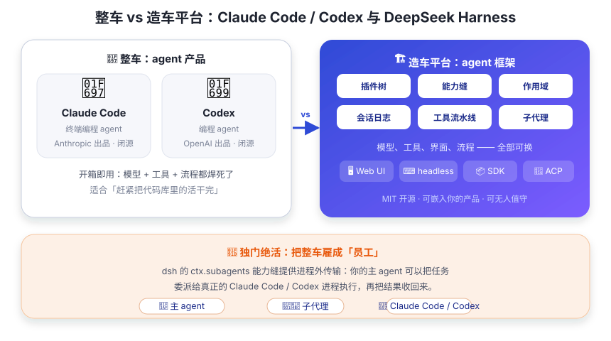

和 Claude Code / Codex 比一比
用你熟悉的工具当尺子，量一量 dsh 这把新尺子 —— 结论一句话：它们是「整车」，dsh 是「造车的平台」。
你可能用过 Claude Code 或 Codex：在终端里说一句「帮我修这个 bug」，它们就会读代码、改文件、跑测试、给你汇报。很好用，对吧？像开一台调校好的跑车。
但它们有个共同点：它们是造好的整车——厂家把模型、工具、流程、界面都焊死了，你只能在预设的轨道里跑（想换发动机？门儿都没有）。而 dsh 是造车平台：底盘、发动机舱、接口都给你了，你可以造出自己的车——甚至把 Claude Code 和 Codex 当「员工」雇来干活：特斯拉干重活，法拉利跑长途，dsh 是那个排兵布阵的老板。

最本质的区别：产品 vs 平台
这不是「谁更好」的问题，而是「谁是什么」的问题：
- Claude Code（Anthropic 出品）：一个终端里的编程 agent 产品，面向「快速在代码库上干活」；
- Codex（OpenAI 出品）：OpenAI 的编程 agent，同样面向「在代码库里完成任务」；
- dsh（DeepSeek AI 出品，MIT 开源）：一个 agent 框架 —— 它不替你决定模型、工具和界面，而是给你一套把 agent 组装起来的积木。
类比：Claude Code / Codex 是「相机」，dsh 是「相机制造平台」。 用 dsh 你能造出一台类似 Claude Code 的东西（换个 UI 外壳 + 编程工具集）， 也能造出完全不同的东西（自动化流水线、无人值守服务、你自己的产品里的 AI 助手）。
一张表速览
| 维度 | Claude Code | Codex | DeepSeek Harness |
|---|---|---|---|
| 定位 | 终端编程 agent 产品 | 编程 agent 产品 | 通用 agent 框架（平台） |
| 默认模型 | Claude 系列 | OpenAI 系列 | DeepSeek（可换任意提供方，含 OpenAI 兼容端点） |
| 运行形态 | CLI / 终端 / IDE 集成 | CLI / IDE 集成 | Web UI + headless CLI + Python/JS SDK + ACP 自动化服务器 |
| 可定制性 | 配置 + hooks 等扩展点 | 配置 + 扩展点 | 万物皆插件：模型、工具、循环、界面、审批全可替换；preset + patch 按会话组装 |
| 能否被 dsh 调用 | ✅ 能 —— dsh 的 subagent 提供方可以委派任务给它们 | —— | |
| 开源 | 否（闭源产品） | 否（闭源产品） | ✅ MIT 开源，源码在 GitHub |
三个最容易混淆的点
① 「dsh 是不是又一个 Claude Code？」—— 不是
dsh 里有一个 agent-loop（智能体循环）插件，跑起来后体验上确实像 Claude Code：
你发任务、它读文件、改代码、跑测试。但 Claude Code 是产品（用它），
dsh 是框架（用它来造/来跑自己的 agent）。dsh 附带的 Web UI 和 headless 只是
两个现成的「外壳」示例 —— 你可以换掉它们，或者干脆不要它们。
② 「dsh 能把 Claude Code / Codex 当子代理？」—— 能，这是它的独门绝活
还记得第 07 章预告的「能力缝」吗？ctx.subagents 这个 seam 的提供方里，
除了进程内的 spawn / fork，还有 进程外的 ACP、Codex、Claude Code 三种传输
（以及 dsh-sdk）。也就是说：你的 dsh agent 可以把一段任务委派给真正的 Claude Code
或 Codex 进程去执行，再把结果收回来 —— 就像项目经理把活外包给两家外包公司。
反过来，dsh 还有 hooks-claude-code / hooks-codex 桥接，能在它们的事件流上挂 dsh 的策略。
③ 「模型只能用 DeepSeek？」—— 不是
默认 profile 装的是 llm-deepseek 适配器，但 ctx.llm 是能力缝：
注册一个新适配器就能换模型，也支持 OpenAI 兼容的自定义端点（第 11 章的配置指南会演示）。
一个 dsh 实例甚至可以让不同 agent 用不同模型。
· 就想在代码库里快速干活，不想折腾 → Claude Code / Codex 开箱即用；
· 想拥有自己的 agent：定制工具与流程、换模型、嵌入自己的产品、跑无人值守自动化 → dsh；
· 想编排多个模型 / 多家 agent，让 Claude Code、Codex、DeepSeek 各干所长 → dsh（把前者当子代理）。